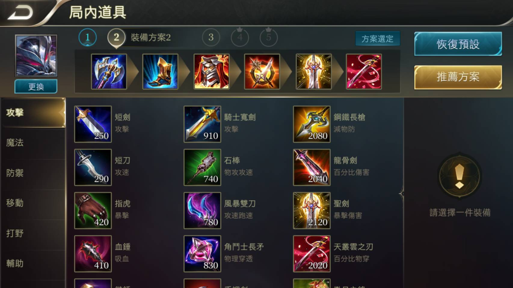
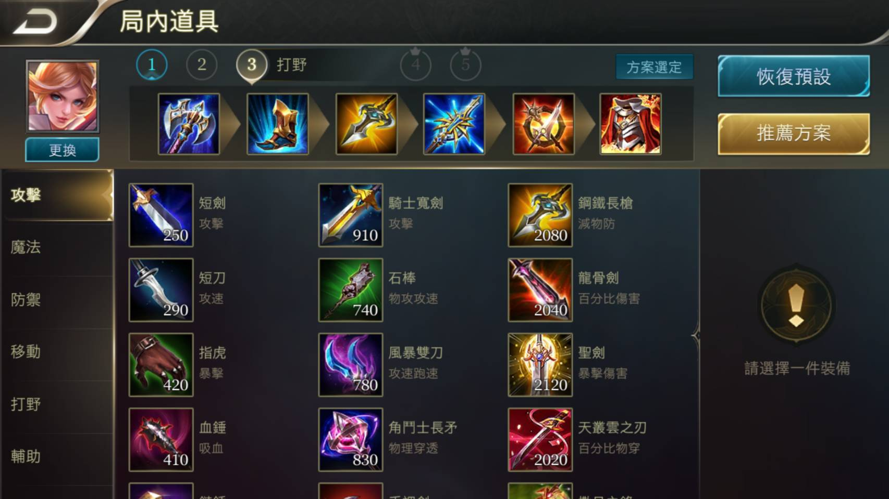
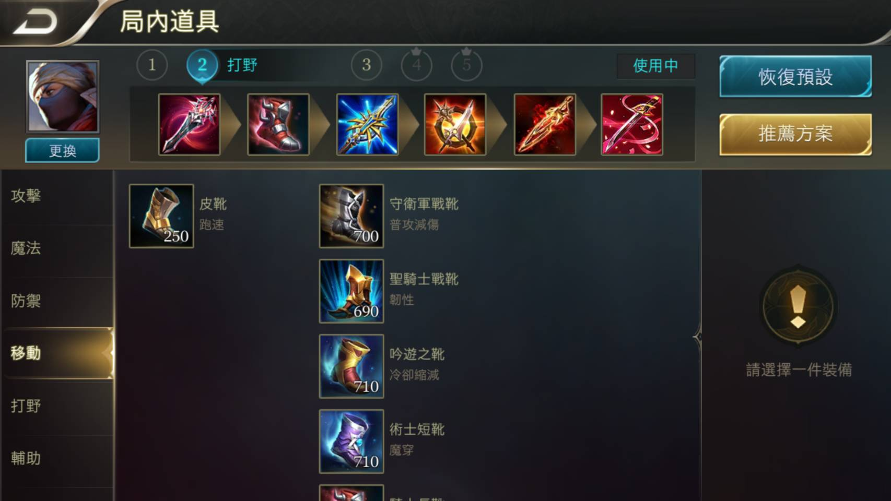
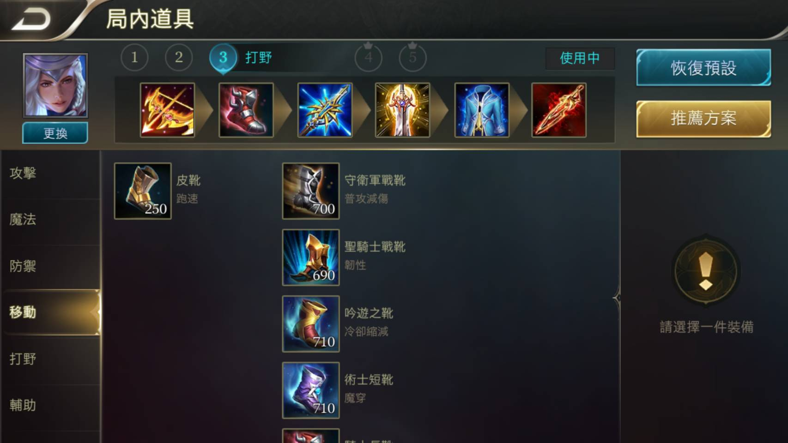
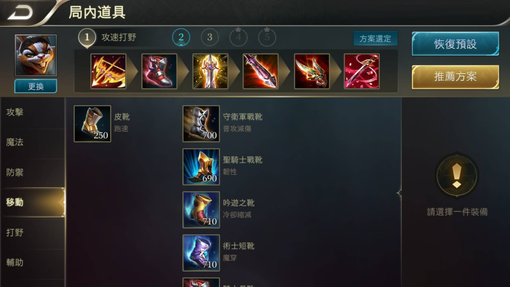
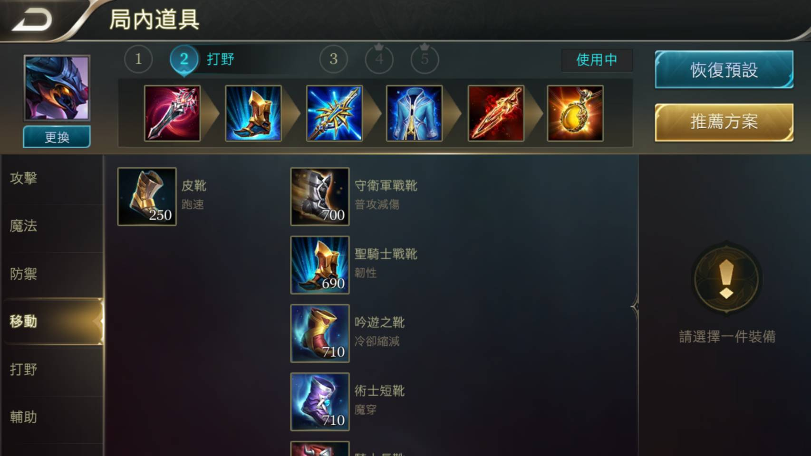
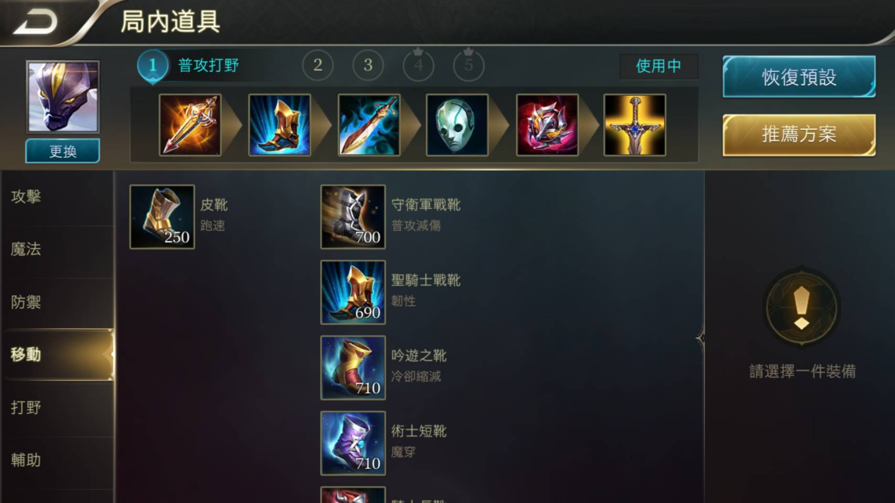
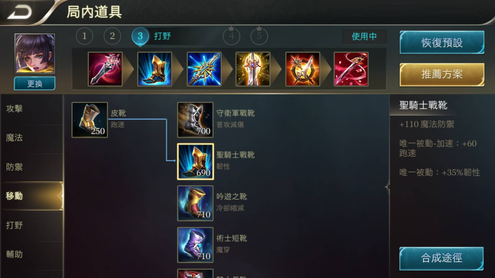
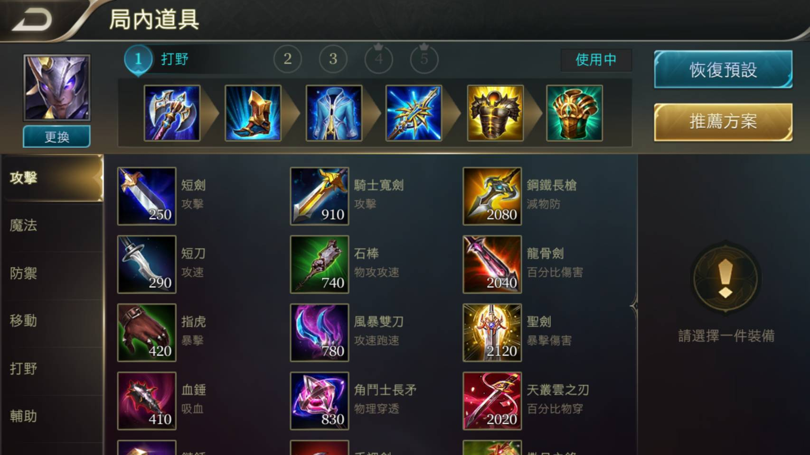

有一些單位是中立的，亦即它們不會主動攻擊附近的英雄，也不屬於任何隊伍。不過如果玩家希望獲得額外經驗及經濟，可以主動向這些位在野區和河道的中立單位發起攻擊，這些中立的單位稱為野怪。 野怪是位於野區和河道的中立怪物，殺死它們後、玩家可以取得經驗和金錢，如：樹苗蛙、夜光蜥蜴、芭蕉猴、鐵甲蟹。 有一些野怪則會提供額外的增益效果，如：
智慧炎魔(藍buff)擊殺者將獲得 智慧泉源：英雄所有技能冷卻減少20%每秒額外回復2%的魔力效果
力量炎魔(紅buff)擊殺者將獲得 力量泉源：攻擊附帶灼傷與減速效果：近戰英雄30%、遠程英雄隨著等級16%~30%攀升
靈魂獵鷹 擊殺後將獲得鷹靈的視野
魔龍 擊殺後提供全隊大量經濟和經驗
深淵魔龍 擊殺後，擊殺方所有英雄獲得與自身職業相符的Buff： 【坦克-不滅之軀】：每秒回復1%最大生命值。 【戰士-暴烈之拳】：物理攻擊增加50+10%。 【刺客-追魂之刃】：獲得100點物理穿透和75點魔法穿透，增加20點跑速。 【法師-混沌之眼】：增加75+15%點魔法攻擊。 【射手-星隕之箭】：暴擊率提升10%，獲得15%物理穿透。 【輔助-勇者之心】：唯一被動：附近英雄每隔5秒回復100點生命和50點魔力。 另外，深淵魔龍死亡會掉落【黑暗之賜】，撿取到的英雄可以獲得：持續時間內免疫致死傷害。受到致死傷害後，會獲得0.5秒的無敵，回復1000+10%最大生命值。
魘魔神凱撒 擊殺後，全隊可以獲得魘魔神凱撒Buff:每秒回復1%的生命和魔力，強化泉水提供的家園守護效果，額外獲得20%跑速，持續9秒；泉水回復不脫戰也有效，持續90秒。擊殺魘魔神凱撒的玩家還可以召喚天空巨龍 天空巨龍可以在任意地點施放。天空巨龍會沿最近的一條兵線路徑進攻。天空巨龍攻擊距離遠於防禦塔，普攻造成AOE傷害。防禦塔不會因天空巨龍靠近而降低防禦。無論是否有小兵，天空巨龍對防禦塔造成的傷害量相同，且天空巨龍成功對防禦塔造成傷害，會反噬自身減少自己的血量。天空巨龍在剛被召喚時較為脆弱，召喚後的10秒內會持續成長，獲得漸增的免傷效果，10秒後成長為完全形態擁有35%免傷。天空巨龍存在期間所有在場小兵屬性加強：最大生命值提升25%；攻擊、跑速提升10%；小兵模型放大10%。擊殺天空巨龍後可獲得25金幣，0經驗，召喚天空巨龍的按鈕持續90秒
冥靈飛龍擊殺後，可以獲得冥靈飛龍Buff：每秒回復50點生命值，增加20點跑速；脫戰可額外獲得40點移動速度，持續60秒。
納克羅斯
刀鋒寶貝
莫拉
琳蒂
史蘭茲
科里納卡
齊爾
堇
瑟斐斯
